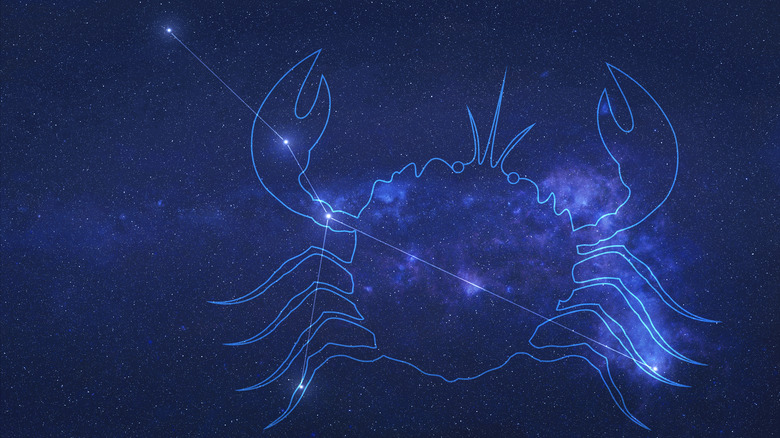

-

The Hunter Orion
The story of Orion and Artemis is a tale as old as time. It teaches us to not believe in the things we hear from word of mouth, and the consequences of doing so. Orion was a fabulous hunter. It was said that once him and his two dogs, Canis Major and Canis Minor, started tracking a target, it was only a matter of time before they succeeded. It was this fact that most likely lead to Orion going to the forest, where Artemis, the Goddess of Wild Animals and the Hunt, resided.
On his way there, he spotted what he thought was a flock of birds and quickly gave chase. It was not long however, before he quickly realized that these weren't birds, but seven Nymphs dressed in white tunics. Now, this normally would not be a cause for concern, but these nymphs were the seven daughters of the Titan, Atlas, and the Oceanid, Pleione; the latter of which Orion had been tracking for quite some time. Among these seven was the nymph Merope, who Orion was, at the time, passionately in love with. This caused him to reach out and grab her, but just as he could make contact the nymphs cried out to Zeus and in pity he transformed all of the nymphs into doves and placed them into the stars. While saddened by this outcome, it was quickly overshadowed by the Goddess Artemis approaching him and complimenting him on his hunting prowess and strength. Soon Orion and Artemis become trustworthy companions, often challenging each other to races and archery competitions; and as night fell, the two would exchange stories and laugh in front of a fire. They fell madly in love, accompanying each other everywhere and hunting the days away. This peace however, would not last.
Unbeknownst to them, Artemis's brother Apollo, the God of Prophecy and ironically Truth, became jealous of their relationship. And began to put plans in place to rid the earth of Orion.
Using his godly powers, he sent a massive scorpion to attack and kill Orion as he slept, but in an amazing stroke of luck, Orion dreamt of this very thing happening and quickly arose to battle the scorpion. They exchange furious blows, but as the battle waged and Orion's strength waned, he found that he could not pierce the creatures hide and began searching for an escape. The scorpion lunged towards Orion once more and in a desperate attempt to live, he ran and dove into the nearby shore and began to swim furiously. Apollo watched as these events unfolded and quickly came up with a plan to finish the job.
He ran into the compound where his sister Artemis and her hunters slept, and told her that an evil man who attacked a forest priestess was swimming by sea to escape. Blinded by her rage Artemis grabbed her bow and let loose an arrow that struck true, right into the heart of Orion.
Noticing her mistake far too late, she quickly swam out to retrieve his body, hoping that her friend Crete, the goddess of medicine would bring him back to life. Zeus interfered with this request, stating that there was a line between mortals and gods, and bringing him back to would cross that line.
Saddened by the loss of the one man she loved, Artemis turned to the stars and used her own godly powers to place his soul in the stars, where he remains even to this day.
-

Chiron The Centaur
Chiron is known throughout Greek mythology for being a youth-raising scholar, and a mentor to some of the greatest heroes to walk the earth. And while this may sound lackluster compared to grand stories of Hercules and his labors, when you account for the fact that Chiron was a centaur, who were known for being wild, lustful, indulgent drinkers and barbaric when intoxicated, things begin to make more sense.
Chiron came to be after the Titan Cronus, the father of the Gods of Olympus, took the form of a horse and impregnated a nymph named Philyra. Because of this Chiron born with the head of a human as well as the legs of a horse. Disgusted by this, Philyra abandoned Chiron and subsequently left him to die.
Thankfully, Chiron was found by the twin gods Artemis and Apollo, and this event led to the both of them nurturing and teaching Chiron countless arts. From musical instruments and archery, to even medicine and prophecy; Chiron's gifted mind absorbed it all. Later, it would become apparent that Chiron's peaceful and kind characteristics came from the very gods who adopted him in a sense.
Chiron, in his adulthood, would go on to teach many of the most famous heroes, such as the invulnerable Achilles, and Jason, the leader of the Argonauts. In fact, most great heroes who went on epic journeys can trace what they've been taught to Chiron and his lessons.
But while the peace-loving centaur wanted nothing more than to spend the rest of his immortal days educating the young Greek minds that would stumble upon him, it was simply not meant to be.
Chiron's death was the outcome of a multitude of circumstances, most of which were not in his control. The hero Hercules had been in a heated discussion with his father Zeus, in which they came to the conclusion that in exchange for the life of Prometheus, he would find a way to make Chiron revoke his immortality. This was not a deal made to harm Chiron, but rather it was made due to Prometheus stealing fire and giving it humankind, which angered the gods.
Hercules, with a heavy heart, dipped an arrow into a jar containing the blood of the mighty Hydra, that he previously had slain for one of his 12 labors, and used his bow to fire it at Chiron.
Chiron fell to his knees and looked in panic at the wound, before long he realized that even with his mastery of medicine that there was no way to heal from this without experiencing a lifetime of pain. Sighing, he looked towards the heavens and renounced his immortality before passing away.
Zeus, in a rare moment of empathy, decided to place Chiron in the stars as acknowledgement as for heroic teachings and scholarly mind, where he remains even to this day.
-

Capricorn
Capricorn, which is Latin for “horned goat” is one of the twelve zodiac signs that graces the stars above our heads, and holds importance across many pantheons as well as real life. The actual animal is a hybrid between a goat and a fish, with the former being the head and the later being the tail.
In the Greek pantheon, Capricorn is often used to talk about two different individuals, one being Amalthea, the goat that breastfeed the soon to be king of gods Zeus in place of his mother. Other times Capricorn is referring to Pan, the main god of nature and the wild. It was said that while trying to escape the disaster that was Typhoon, he gave himself a fishes tail and swam away, saving his life.
In ancient times, the Babylonian's recored in it their star catalogs around 1000 BCE. Later it would become the symbol for their god of water and bounty Era. While Ea was only one god in a pantheon of many he was deem very important around spring, where having a good bounty and water was a necessity to continue living.
-

Scorpio
Scorpio is one of the 12 zodiac signs that rest above our head in the stars. Like all the other it has importance and meaning that span back to the Ancient Era and across a plethora of pantheons.
In Greek history, the constellation Scorpio represented the fierce battle between Orion and colossal scorpion that the God of Prophecy Apollo sent. Orion managed to escape, only to be shot down by his lover Artemis, the Goddess of the Hunt, who was deceived by her brother Apollo in a ploy to get rid of Orion.
After the battle's conclusion, Zeus immortalized the conflict by placing both Orion and the scorpion in the stars. To this day, both constellations remind us to not trust others blindly, lest it lead to disastrous results.
-
Leo
A gilded leonine beast of blood and fangs stalks the outskirts of Nemea. The villagers make fine meals for this Lion as they have no match among them worthy to challenge this monster. Many try to slay the beast to stop the suffering of the townsfolk. They all meet the same end as their arrows splinter, their spears deflect off the fur of the beast, and their swords leave no marks. The monster is without equal, and holds dominion over his swathes of land. However, all life comes to an end, even that of a monster.
King Eurystheus tasked a warrior, Heracles, with killing the Nemean nightmare. This task would be one of twelve nigh impossible labours that Heracles would have to complete to atone for the sin of familicide. Heracles, having murdered his own wife and child in a fit of madness induced by the spiteful Hera, was ready to give his life in penance for his crime. Heracles traveled to Nemea, along the way inquiring about the maned demon. The stories he heard were of unequaled bloodlust, violence, and terror. Those speaking to Heracles about the Nemean Lion, spoke in hushed voices, convinced that the impenetrable wildcat would tear their flesh from bone, having no way to defend against a beast that shrugged off weaponry without a hint of effort.
Heracles continued on his journey, searching for the Lion. He understands that this Labour, the first of twelve, must be completed to absolve himself in the eyes of the Gods. The stories after all, are still only stories. Fables. Fairytales made to impart lessons. Then in time, those stories are remade, reworked, and retold, until they hardly resemble the truth. A beast that can’t be killed? Heracles would be the one to ground this fairytale to reality by killing the Lion. He fashioned arrows along the way to the beast. Surely his bow-arm was far stronger and steadier than those of the villagers. Heracles tracked the beast, his confidence rising as he had managed to sneak upon the Lion without alerting it. The Nemean Lion had no need for alertness. All hunters become the hunted in the presence of the golden Lion.
Heracles let loose an arrow, striking the Lion in the thigh. Surely the beast would fall quickly if its legs were crippled by the tip of his arrows? Heracles now knew: some stories, no matter how seemingly exaggerated, pale in comparison to the subject in flesh and blood. The arrow brushed off the Lion as easily as a fly, and seemed to leave even less of an impression than one. The atonement of Heracles would not be an easy path, but he would earn it. If weapons won’t draw blood, then why bother with them at all? Heracles, steadfast in his resolve, stalked the beast back to its den. He blocked one entrance, and made his appearance known at the other. Only one would leave the cave.
On that day, like so many figures before him, the Nemean Lion became enshrined among the stars after meeting his end at the hands of Heracles, his story one to be told for ages. Heracles emerged, hands bloodied, with a story of unimaginable feats. Many wonder how many times this story has been remade, reworked, and retold.
-

Cancer
Many know the story of Heracles and the Hydra, but few speak of the lowly Crab who was amongst the fierce battle. The Crab, although often forgotten among the stories of the second labour of Heracles, still finds a place in the modern world, having had its visage placed among the stars by Hera.
The Crab was among many other plots, schemes, and vessels, by which Hera sought to seek revenge on a man she reviled: Heracles. She viewed him as a living monument to Zeus’s infidelity to her. A child born to another woman out of wedlock. A tarnish upon her honor. Merely by virtue of being born to an adulterous father, Heracles became a focal point of Hera’s rage. She wielded this rage by making attempts at his life, and tormenting him at her every beckoning. In her jealous fits, she sent Heracles into a state of madness in which he murdered his wife and children. What followed would be a long trial of twelve labours that Heracles would be subjected to in order to absolve himself.
As with the Nemean Lion before, the Crab found his way into the heavens due to its involvement in these twelve labours, no matter how meager the contribution. For Heracles second impossible task, he was sent to kill a multi-headed serpent, the Hydra. A storm of scale and sickly scent, the Hydra was raised by Hera with the purpose of killing Heracles, a man of repute after having torn the head of the Nemean Lion in two. Tearing off one head was difficult enough, how would he fare against two? Three? Hera felt sure that her jealousy would dissipate along with the life of Heracles, but to be sure, she raised another beast to aid the Hydra. A beast that would make Heracles kneel before Hera, surely?
Carcinos. Cancer. Or simply the Crab. This oversized being, a towering monster with claws to rend flesh, and a carapace to parallel the best of armor, was a terror in its own right. In the end, some nightmares fade in the presence of another on a grander scale. The Crab, once feared by the Lernaean people, became an afterthought once the Hydra emerged. No matter, the Crab would surely be the one to bring Heracles down to his knees, yes?
When Heracles arrived at the spring of Amymone, he was greeted by the stench of the Hydra, emanating from each set of snarling teeth that was bared at him. He is distracted, now is the perfect time to bring him to his knees, yes? The Crab attacked low while the Hydra held Heracles' attention.
Again, many know the stories of the harrowing battle between the Hydra and Heracles. Many do not know the role the Crab played in this theatre of strength and speed. The reason for the disparity is plain to see. The Crab did not make Heracles kneel. The Crab did not bring him to his knees. The Crab, a pitiful beast in the shadow of the Hydra, fell to Heracles without effort. An end as meager as the life that it punctuated. Perhaps due to a sliver of empathy in Hera, she still placed the Crab among the stars so its life would be remembered.